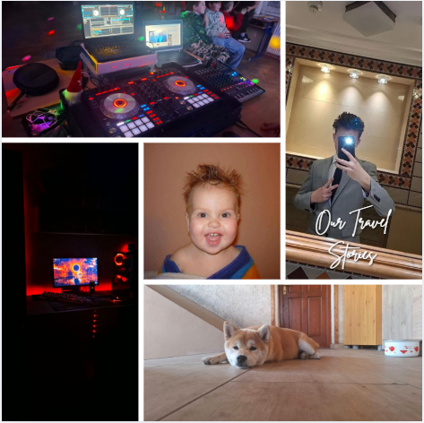

Macsó Márk vagyok, 15éves és Tiszalúcról érkeztem, szeretem az informatikát és a hangtechnikát. Sokat foglalkozom hangtechnikával, ezzel kiskörű fellépéseken/rendezvényeken veszek részt. Szeretem az állatokat, és van is egy 10hónapos kutyám, Zora - Shiba Inu, szuka.
Azért választottam a Kandót, hiszen érdekel a programozás, és később szoftvereket szeretnék fejleszteni, idővel pedig játékokat talán még egyéb biztonsági rendszereket/appokat magamnak, és családomnak. Mindez mellett érdekel a gép működése/felépítése, illetve szeretnék majd magamnak gépet/gépeket összerakni/építeni
